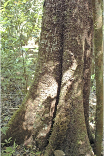
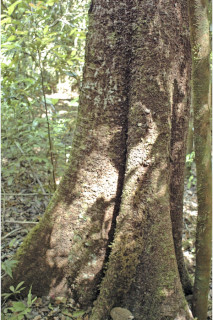
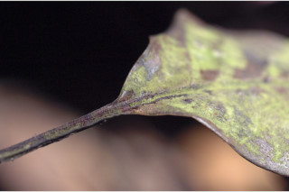
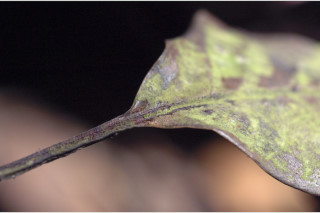

Trees slightly buttressed, up to 25 m tall.
ಸ್ವಲ್ಪ ಮಟ್ಟಿಗೆ ಆನಿಕೆಗಳನ್ನುಳ್ಳ 25 ಮೀ. ಎತ್ತರದವರೆಗಿನ ಮರಗಳು.
25 മീറ്റര് വരെ ഉയരമുളള, ലഘുവായ വപ്രമൂലമുളള മരങ്ങള്.
மரங்கள், சிறிய தாங்கு வேர்களுடையது (பட்ரஸ்டு), 25 மீ. உயரம் வரை வளரக்கூடியது
Bark brown, large lenticellate; blaze pinkish.
ತೊಗಟೆ ಕಂದು ಬಣ್ಣದಲ್ಲಿರುತ್ತದೆ ಮತ್ತು ದೊಡ್ಡ ವಾಯು ವಿನಿಮಯ ಬೆಂಡು ರಂಧ್ರಗಳ ಸಮೇತವಿರುತ್ತದೆ;ಕಚ್ಚು ಮಾಡಿದ ಜಾಗ ನಸುಗೆಂಪು.
വലിയ ശ്വസനരന്ധ്രങ്ങളുളള, തവിട്ട് നിറത്തിലുളള പുറംതൊലി; വെട്ട്പാടിന് പിങ്ക് നിറം.
மரத்தின் பட்டை ப்ரவுன் நிறமானது, பெரிய லெண்டிசெல் கொண்டது; உள்பட்டை பிங்க் நிறமானது.
Young branchlets terete, pubescent.
ಕಿರುಕೊಂಬೆಗಳು ದುಂಡಾಗಿದ್ದು ಮೃದು ತುಪ್ಪಳ ಸಮೇತವಿರುತ್ತವೆ.
നനുത്തരോമിലമായ, ഉരുണ്ട ഇളം ഉപശാഖകള്.
சிறிய நுனிக்கிளைகள் குறுக்குவெட்டுத் தோற்றத்தில் வளையமானது, உரோமங்களுடையது.
Leaves simple, alternate, spiral; petioles 1.5-2.5 cm long; lamina 6.5-10 x 2.5-5 cm, elliptic to elliptic-ovate, apex acute to shortly acuminate sometimes obtuse, base asymmetric, margin revolute, glabrous, often puberulous along midrib above, coriaceous, drying black; midrib canaliculate above; secondary_nerves 6-10 pairs; tertiary_nerves broadly reticulate.
ಎಲೆಗಳು ಸರಳವಾಗಿದ್ದು ಪರ್ಯಾಯ ಮತ್ತು ಸುತ್ತು ಜೋಡಣಾ ಮಾದರಿಯಲ್ಲಿರುತ್ತವೆ; ತೊಟ್ಟುಗಳು 1.5 -2.5 ಸೆಂ.ಮೀ. ವರೆಗಿನ ಉದ್ದವಿರುತ್ತವೆ;ಪತ್ರಗಳು 6.5-10 X 2.5-5 ಸೆಂ.ಮೀ.ಗಾತ್ರ ಹೊಂದಿದ್ದು ಅಂಡವೃತ್ತದಿಂದ ಅಂಡವೃತ್ತ-ಅಂಡದ ಆಕಾರ ಹೊಂದಿದ್ದು, ಚೂಪಾದುದರಿಂದ ಕಿರಿದಾಗಿ ಕ್ರಮೇಣ ಚೂಪಾಗುವ ಕೆಲವು ವೇಳೆ ಚೂಪಾಗಿರದ ತುದಿ, ಅಸಮವಾದಬುಡ ಮತ್ತು ಹಿಂಸುರುಳಿ ಅಂಚನ್ನು ಹೊಂದಿರುತ್ತವೆ; ಮೇಲ್ಮೈ ತೊಗಲನ್ನೋಲುವ ಮಾದರಿಯಲಿದ್ದು ರೋಮರಹಿತವಾಗಿರುತ್ತದೆ, ಹಲವು ವೇಳೆ ಪತ್ರದ ಮೇಲ್ಭಾಗದ ಮಧ್ಯನಾಳ ಸೂಕ್ಷ್ಮವಾದ ಮೃದು ತುಪ್ಪಳದಿಂದ ಕೂಡಿರುತ್ತದೆ; ಪತ್ರದ ಮೇಲ್ಮೈ ಒಣಗಿದಾಗ ಕಪ್ಪು ಬಣ್ಣದಲ್ಲಿರುತ್ತದೆ; ಮಧ್ಯನಾಳ ಪತ್ರದ ಮೇಲ್ಭಾಗದಲ್ಲಿ ಕಾಲುವೆ ಗೆರೆ ಸಮೇತವಿರುತ್ತದೆ;ಎರಡನೇ ದರ್ಜೆಯ ನಾಳಗಳು 6-10 ಜೋಡಿಗಳಿರುತ್ತವೆ;ಮೂರನೇ ದರ್ಜೆಯ ನಾಳಗಳು ವಿಶಾಲ ಜಾಲ ಬಂಧ ನಾಳ ವಿನ್ಯಾಸದಲ್ಲಿರುತ್ತವೆ.
ലഘുവായ ഇലകള്, ഏകാന്തരക്രമത്തില് സര്പ്പിളമായി അടുക്കിയതാണ്; ഇലഞെട്ടിന് 1.5 സെ.മീ മുതല് 2.5 സെ.മീ വരെ നീളം; പത്രഫലകത്തിന് 6.5 സെ.മീ മുതല് 10 സെ.മീ വരെ നീളവും 2.5 സെ.മീ മുതല് 5 സെ.മീ വരെ വീതിയും, ദീര്ഘവൃത്തം തൊട്ട്, ദീര്ഘവൃത്തീയ-അണ്ഡാകാരം വരെയുമാകാം, പത്രാഗ്രം നിശിതം തൊട്ട് ചെറുദീര്ഘാഗ്രമോ ചിലപ്പോള് ഉപകോണാകാരമോ ആവാം, പത്രാധാരം അസമമാണ്, അരികുകള് പുറത്തേക്ക് വളഞ്ഞതാണ്, അരോമിലം, മിക്കവാറും മുകളില് മുഖ്യസിരയില് നനുത്ത രോമിലമാണ്, ചര്മ്മില പ്രകൃതം, ഉണങ്ങുമ്പോള് കറുപ്പാകുന്നു; മുഖ്യസിര മുകളില് ചാലുളളതാണ്; 6 മുതല് 10 വരെ ജോഡി ദ്വിതീയ ഞരമ്പുകള്; വീതിയേറിയ ജാലിത പെര്കറന്റ് വിധത്തിലുളള ത്രിതീയ ഞരമ്പുകള്.
இலைகள் தனித்தவை, மாற்றுஅடுக்கமானவை, சுழல் போன்று அமைந்தவை; இலைக்காம்பு 1.5-2.5 செ.மீ. நீளமானது; இலை அலகு 6.5-10 X 2.5-5 செ.மீ., நீள்வட்டம் முதல் நீள்வட்டம்-முட்டை வடிவானது, அலகின் நுனி கூரியது முதல் சிறிய அதிக்கூரியது, சிலசமயங்களில் மொட்டையானது, அலகின் தளம் சமமற்றது, அலகின் விளிம்பு பின்புறம் வளைந்து (ரெவலுட்) காணப்படும், உரோமங்களற்றது, பெரும்பாலும், அலகின் அடிப்புறத்திலுள்ள மையநரம்பு உரோமங்களுடையது, கோரியேசியஸ், உலரும் போது கருமை நிறமடைகிறது; மையநரம்பு மேற்புறத்தில் அலகின் பரப்பைவிட பள்ளமானது; இரண்டாம் நிலை நரம்புகள் 6-10 ஜோடிகள்; மூன்றாம் நிலை நரம்புகள் அகன்ற வலைப்பின்னல் போன்றது.
Inflorescence terminal or axillary corymbose cymes.
ಹೂಗಳು ಬಿಳಿ ಬಣ್ಣ ಹೊಂದಿದ್ದು ಅಕ್ಷಾಕಂಕುಳಿನಲ್ಲಿನ ಅಥವಾ ತುದಿಯಲ್ಲಿನ ನೀಳಛತ್ರ ಮಧ್ಯಾರಂಭಿ ಪುಷ್ಪಮಂಜರಿಯಲ್ಲಿರುತ್ತವೆ ಮತ್ತು ಅನೇಕ ಕೇಸರಗಳನ್ನು ಹೊಂದಿರುತ್ತವೆ.
പൂങ്കുലകള് ഉച്ഛസ്ഥമോ കക്ഷീയമോ ആയ കോറിമ്പ് സൈമുകളാണ്.
மஞ்சரி தண்டின் நுனியில் அல்லது இலைக்கோணங்களில் காணப்படும் கோரியேம்போஸ் சைம் வகை.
Drupe, ca. 1.5 cm long, obliquely ellipsoid, compressed; seed 1, obovate, compressed.
ಡ್ರೂಪ್ಗಳು ಅಂದಾಜು 1.5 ಸೆಂ.ಮೀ. ಉದ್ದವಿರುತ್ತವೆ ಮತ್ತು ಓರೆಯಾದ ಅಂಡವೃತ್ತ ಆಕಾರದಲ್ಲಿದ್ದು ಸಂಕುಚಿತವಾಗಿರುತ್ತವೆ; ಬೀಜ ಒಂದಿದ್ದು ಬುಗುರಿಯಾಕಾರದಲ್ಲಿದ್ದು ಸಂಕುಚಿತವಾಗಿರುತ್ತದೆ.
പരന്ന അപഅണ്ഡാകാരത്തിലുളള ഒറ്റവിത്തുമാത്രമുളള കായ, ഏതാണ്ട് 1.5 സെ.മീ കുറുകേയുളള പരന്നതും ചരിഞ്ഞ ദീര്ഘഗോളാകാര ഡ്രൂപ്പ് ആണ്.
உள்ளோட்டுத்தசைகனி (ட்ரூப்), 1.5 செ.மீ. நீளமானது சமமற்ற நீள்வட்ட வடிவானது, தட்டையானது; விதை ஒன்றுடையது, தலைகீழ் முட்டை வடிவம் தட்டையானது.
 



 
